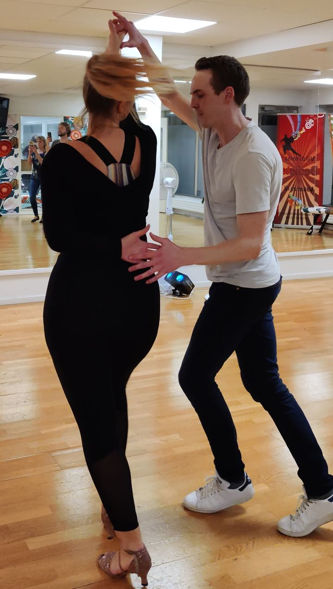
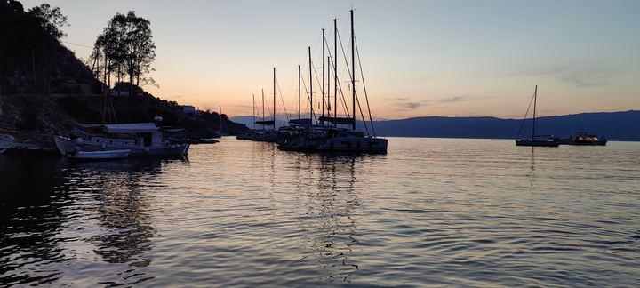
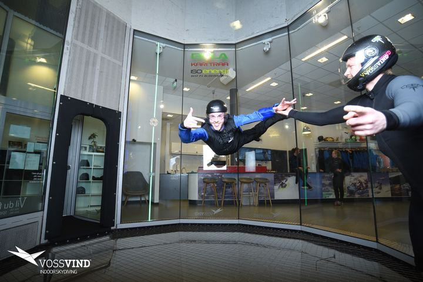
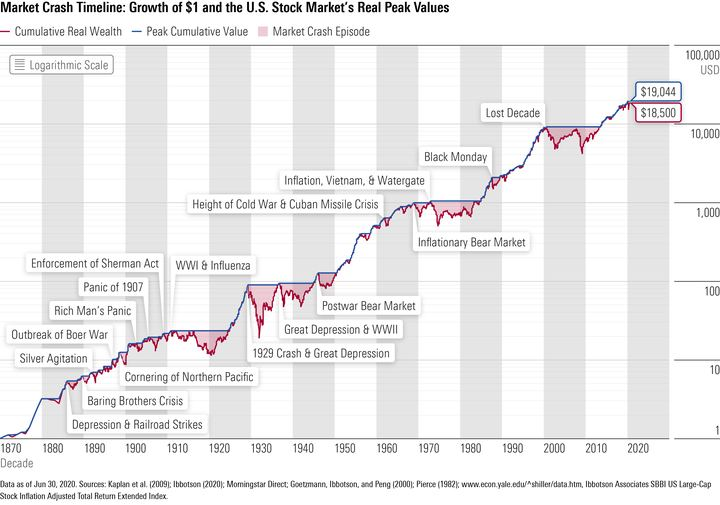
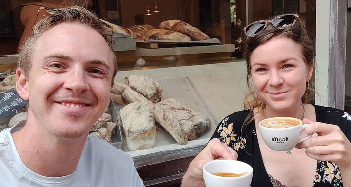
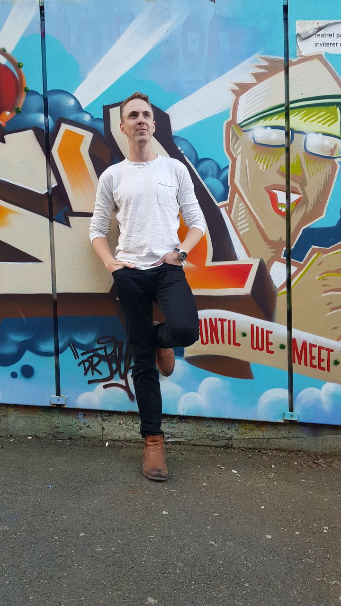

Everything here took an embarrassing number of failed
attempts before it became enjoyable, which is the only thing they really have in common.
I include them because how someone approaches getting bad at something in public is
reasonably diagnostic.

Cuban salsa
Born with two left feet and no rhythm, so I took the beginners' course four times. Six months of counting beats in hotel rooms between work trips before anything clicked. Now it is a few evenings a week — and the clearest evidence I have that persistence beats aptitude.

Boats and water
I hold a bareboat cruising certification and own a small Uttern, which means a good part of the Swedish summer is spent somewhere off the west coast with the engine off.

Flying, and falling
A private pilot licence from 2012 and — pictured — rather more time in a vertical wind tunnel than is strictly dignified. What stuck from the flying was not the flying: it was the discipline. Checklists, pre-flight, and the working assumption that you will forget something important unless the process catches it for you. That habit has been worth more to me in engineering than in the air.

Markets
I bought my first stock at thirteen, through my father. The interest was never really about the money — it is the cleanest available laboratory for incentives and human behaviour at scale. These days it is a rebalance now and then, and rather more reading than trading.
Travel
Ninety destinations in one working year taught me that travel is mostly logistics. The parts that actually changed how I think were the slower ones — India for school, and the trips since where the point was to be somewhere rather than to arrive.

Coffee, and doing nothing
A coffee somewhere with people going past is close to meditative for me, and it is the reliable break in a day otherwise spent looking at a screen. Yoga twice a week does the same job for the parts of me that a desk is slowly ruining.
Around sixty smart devices on Home Assistant, which is roughly forty more
than anyone needs and exactly the number required to learn what happens when an
integration silently stops publishing. I once sent Google Smart Home a three-page email
about how their service handled a household of that size. A printer-leasing company got a
similarly thorough note about automating their service flow and sent me a speaker.
I am aware of how this reads. It is also, more or less, the same instinct
that makes me read the actual error message at work rather than restarting the cluster.

Back to the day job?
The work page has the case studies, the open-source projects and the live
dashboards.